Research
Turbulent flow
Turbulent Coherent Structures in Wall-Bounded Turbulent Flows
Turbulent boundary layers (TBLs) are observed in many fluid dynamic engineering applications, such as automobiles, ships, airplanes and heat-exchangers, and the fundamental mechanisms of heat and momentum transfer are controlled by the dynamics of turbulent structures. In particular, it has been known that very-large-scale motions or superstructures observed in turbulent flows are prominent and these motions typically account for half of the streamwise turbulent kinetic energy and more than half of the Reynolds shear stress in canonical wall-bounded turbulent flows of pipes, channels and boundary layers. Thus, understanding the fundamental nature of the structures will improve modeling and control in these important applications.
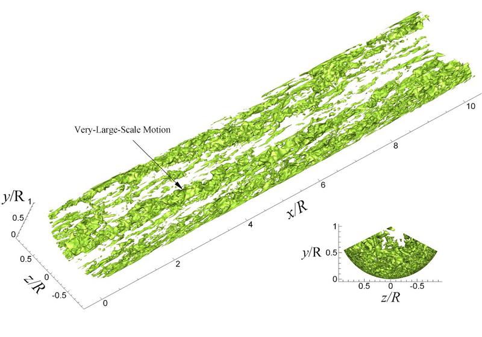
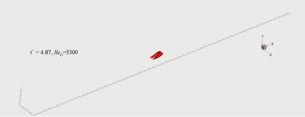
Rough-Wall Turbulent Boundary Layer Flows
Turbulent boundary layers (TBLs) are observed in numerous fluid dynamic engineering applications, and many experimental and numerical studies have examined, spatial features of TBLs. In engineering applications involving wall-bounded boundary layer flow (e.g. automobiles, ships, airplanes and heat exchangers), the roughness of the wall surface is an important design parameter because it influences flow characteristics such as the transport of heat, mass and momentum. Although effects of surface roughness on a TBL have been examined in many experimental and numerical studies, knowledge of these effects remains incomplete.
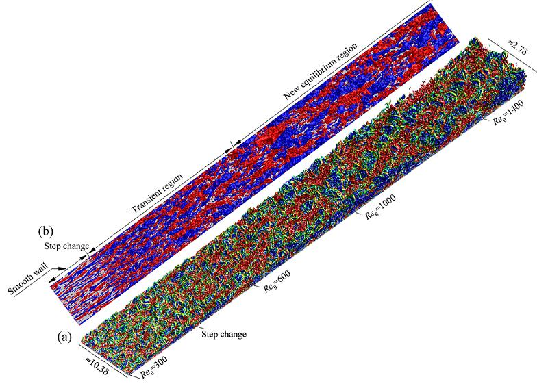
Adverse-Pressure Gradient Turbulent Boundary Layer Flows
Turbulent boundary layers (TBLs) are subjected to adverse pressure gradients (APGs) in numerous engineering applications, such as diffusers, turbine blades and the trailing edges of aerofoils. Because the upper limit of the efficiency of such devices is almost always determined by the APGs, the behavior of the APG flow is of practical importance. A literature survey reveals many studies dealing with pressure gradient effects in turbulent boundary layers, but most of them have focused only on statistical properties, and little has been known about coherent structures in TBL with APG.
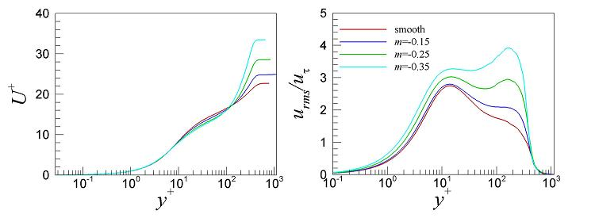
to zero- and adverse-pressure gradients. m denotes the exponent of the APG.
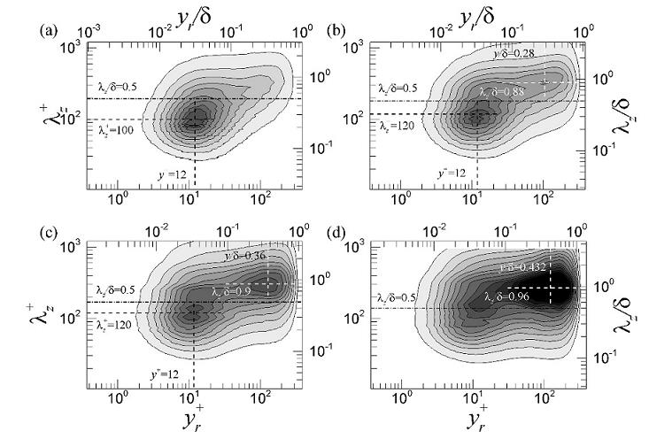
(a) ZPG, (b) mild APG, (c) moderate APG and (d) strong APG
Temporally Decelerating Turbulent Pipe Flow
Turbulent Plane Couette-Poiseuille Flow
For several decades, turbulent Couette or Couette-Poiseuille flows have been received much attention in the area of fluid mechanics, because they are present whenever a wall moves to the flow direction (e.g., turbulent bearing films). These flows are known to be beneficial for more efficient diffusion, less resistance and greater turbulence kinetic energy than those in Poiseuille flows. Because the fundamental mechanisms of heat and mass transfer in turbulent Couette-like flows are mostly attributed to dynamics of turbulent coherent structures, study of turbulent structures in Couette-like flows with simple flow geometry will contribute to further advances for flow control, turbulent modeling and understanding of turbulent structures in Poiseuille flows.
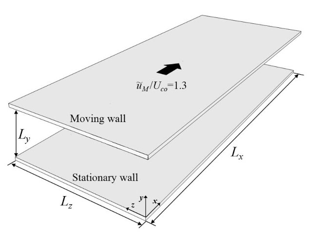
The bottom wall is stationary with no-slip condition.
Temporally Accelerating Turbulent Pipe Flow
Flow acceleration or deceleration in wall-bounded turbulent flows is frequently encountered not only in engineering applications (e.g., turbo-machinery and heat exchanager) but also in biomedical application (e.g., airflow in human lungs and blood flow in large arteries). Earlier studies for unsteady and non-periodic turbulent flows (Kline et al. 1967; Narasimha & Sreenivasan 1973; Warnack & Ferholz 1998) have shown that decelerating the flow enhances turbulence with more frequent and violent bursting event, and large-scale structures emerge more prominently in the outer layer. In contrast, when the flow is accelerated, the bursting process ceases, and relaminarization or 'reverse transition' occurs, thereby resulting in skin friction drag reduction, although kinetic energy of mean flow is increased by the acceleration.
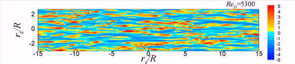
Super-Hydrophobic Drag Reduction in Turbulent Pipe and Channel Flows
Super-hydrophobic surfaces are patterned rough surfaces covered with a hydrophobic coating with micro-scale structures and large contact angle. Upon contact of liquids with these surfaces, small bubbles are created in between the surface roughness tips, producing a slip velocity over a gas/liquid menisci. This slippage generally leads to drag reduction, and it has been paid great attention for drag reduction in this society.
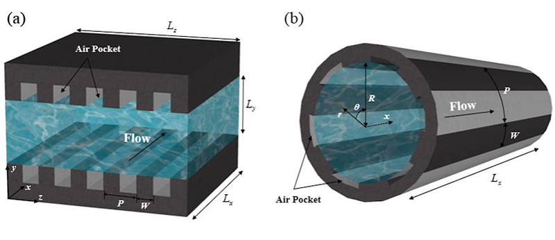
Active Control of Turbulent boundary Channel Flow using Wall Shear Free Control
Over several decades, significant efforts have been devoted to reduction of skin-friction drag in wall-bounded turbulent flows due to limited natural resources and environmental deterioration (Kasagi et al. 2009). Because decreasing the drag also induces reduction of structural vibrations, noise and surface heat transfer generated by turbulent flows (Kim & Bewley 2007), it is desirable to develop effective and reliable flow control strategies for drag reduction in many engineering applications. Here, we have revised a new flow control concept for active drag reduction using streamwise mean velocity free condition. Because the method only requires velocity information at the wall and achieves a large drag reduction rate even over a limited area, the active flow control suggested here could be a more practical and efficient method in real application.
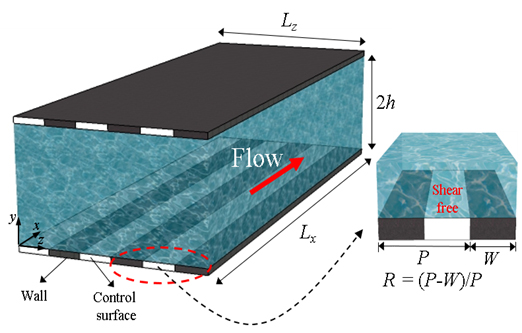
The black and white colors indicate no-control (no-slip) and control (slip) surfaces at the wall.
Shock-Turbulence Interaction in a Turbulent Channel Flow
Active Control of Pressure Fluctuations in Turbulent Cavity Flow
Large-eddy simulations of turbulent boundary layer flows over an open cavity are conducted to investigate the effects of wall-normal steady blowing on the surpression of pressure fluctuations on the cavity walls.
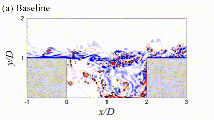
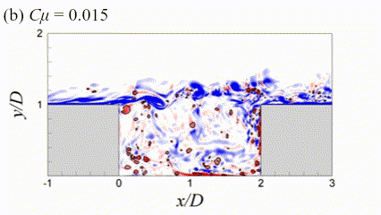
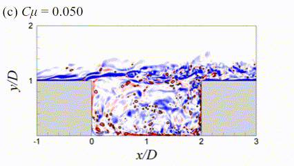
Deep Reinforcement Learning (DRL)-based Control of Turbulent Cavity Flows
While numerous flow control methods have been explored for both turbulent and laminar flow scenarios, they often encounter limitations when dealing with chaotic flows characterized by nonlinearity and high dimensionality. With the advent of machine learning, Deep Reinforcement Learning (DRL) has emerged as a promising approach for addressing various flow control challenges.
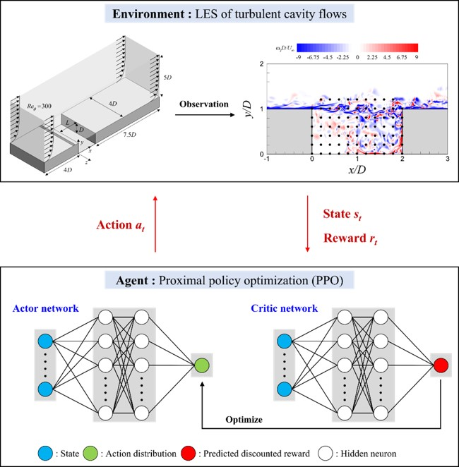
Additionally, DRL-based control methods, particularly those using the PPO algorithm, have been successfully applied to active flow control in turbulent cavity flows under various conditions. The PPO algorithm, which consists of actor and critic neural networks, uses flow field data as states (inputs to both networks; in this case, pressure data within the recirculation zone and along the wall) to train these networks. It provides actions (specifically, the intensity of the synthetic jet upstream of the cavity) to the flow field as a form of control. Due to its efficiency in handling high-dimensional flows and its stability, the PPO algorithm shows great promise for controlling unsteady, high-dimensional flows (Vignon et al., 2023).